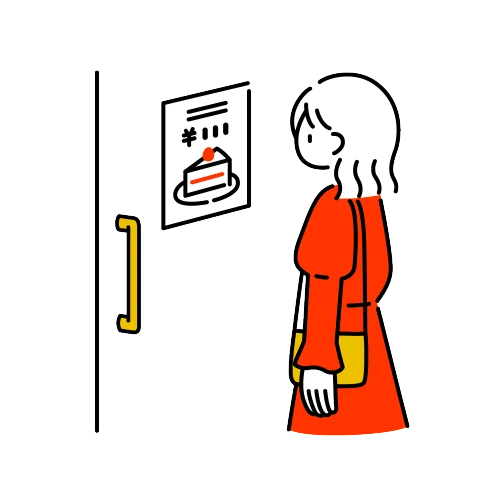

{% include navigation.html %}

{% include _header.html %}

<h2>news</h2>

<div class="wrapper">
    <ul class="slider">
        <li><a href="#"><span>2021.11.01</span>1 つめのニュースの記事です。</a></li>
        <li><a href="#"><span>2021.11.02</span>2 つめのニュースの記事です。</a></li>
        <li><a href="#"><span>2021.11.03</span>3 つめのニュースの記事です。</a></li>
    </ul>
</div>

<div class="sirases">
    <ul>
        {% for cat in site.cats %}
        <li>
            <a class="hadline-entry" href="{{ cat.url | relative_url }}">
                
                <div class="headline-text">
                    <small>{{ cat.date | date: "%Y.%m.%d" }}</small>
                    <span>{{ cat.title }}</span>
                </div>
            </a>
        </li>
        {% endfor %}
    </ul>
</div>


<footer id="footer">
    <p id="page-top"><a href="#">Page Top</a></p>
    <small>&copy;nemius 2022</small>
</footer>